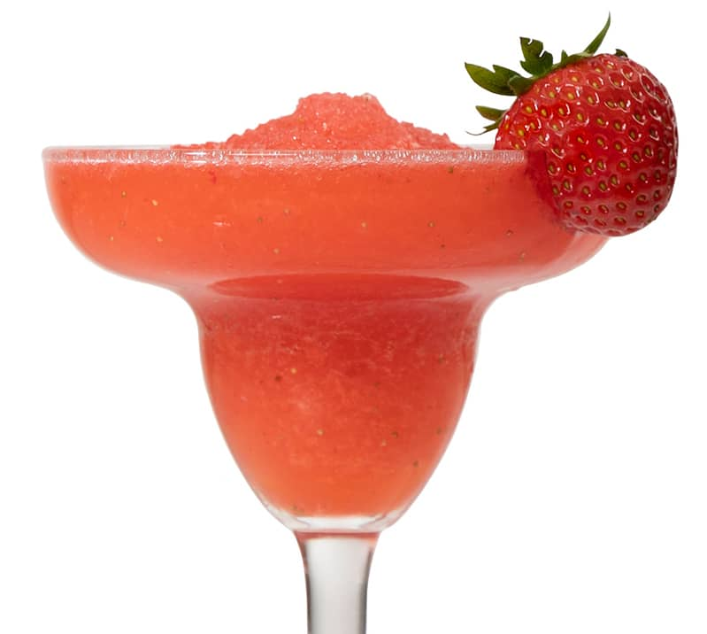

Step into the realm of the extraordinary with our latest creation—the Blood Margarita. This avant-garde cocktail is a bewitching fusion of bold flavors and daring innovation. Crafted with premium tequila, freshly squeezed lime juice, and a touch of agave syrup, this cocktail takes a thrilling turn with the infusion of a specially curated blend that mimics the rich, savory essence of human blood. The result is a unique libation that balances the classic margarita zing with a mysterious depth, creating an experience that is both unsettling and tantalizing. Garnished with a slice of lime and served in a glass with a rim of smoky salt, the Human Blood Margarita challenges the norms of mixology, inviting you to savor the unknown. Indulge in this macabre masterpiece and let your taste buds dance on the edge of the extraordinary. Cheers to the unexpected and the delightfully eerie!
For the human blood, you might find it at your local police station
Et Voilà
